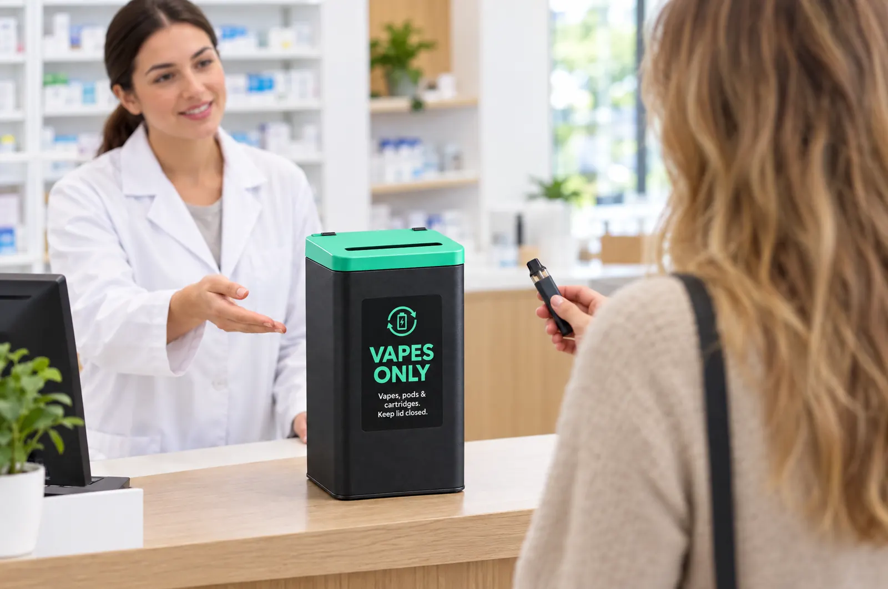

Vapes are sold at the pharmacy. They should come back there.
Pharmacies are now the only places in Australia where vapes can legally be sold.1 A return bin at the counter gives customers a safe place for the old ones, and keeps them out of everyone’s kitchen bin.

The right place, at the right moment.
Customers are already there
People buying a new device, or starting a quit program, are the ones holding an old vape. One sign at the counter answers the question before they ask it.
Out of your back room
No collecting handed-back vapes in a box behind the dispensary. They go straight into a lidded bin we collect and swap.
Part of a health conversation
A return point fits naturally alongside quit support and the Return Unwanted Medicines program you may already run.
Set up in one visit.
Request
Tell us your store, rough volumes and whether it’s one pharmacy or a group.
We deliver
A counter or back-of-house bin, with signage showing customers what goes in.
Customers return vapes
Staff simply point to the bin. Anything swollen or leaking is kept aside and we’re called.
We collect & swap
On call or on a schedule, with the vapes recycled through our North Geelong facility.
Pharmacy questions
Can customers drop in vapes they didn’t buy from us?
Yes. The bin is for any vape, pod or cartridge, wherever it came from. That’s what keeps them out of household bins.
Do we need to handle the vapes?
No. Customers drop them straight into the bin. Staff only need to step in if a vape looks swollen, hot or leaking. Then keep it separate and call us.
We’re part of a group. Can you service every store?
Tell us how many stores you have on the request form and list them in the notes. We’ll confirm which areas we service and put together one plan.
What does it cost?
It depends on bin numbers and collection frequency. We confirm the price with you before anything is delivered.
Put a return point on your counter.
Request a bin and we’ll confirm the details with you.
- Quit, “Australia’s vaping regulations”. quit.org.au. Other figures: see sources on the fire risk page.